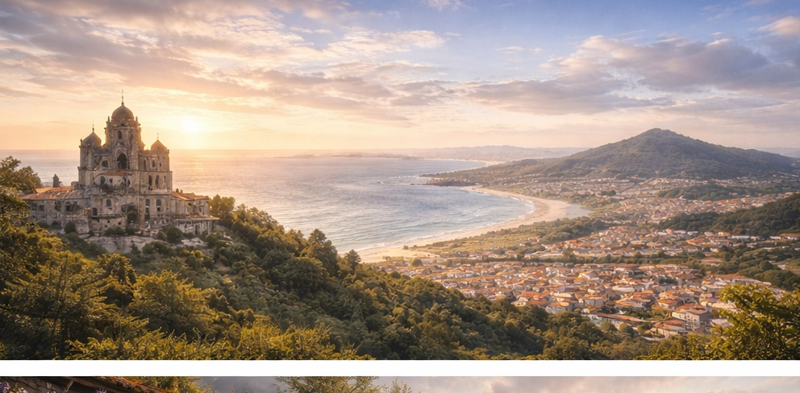
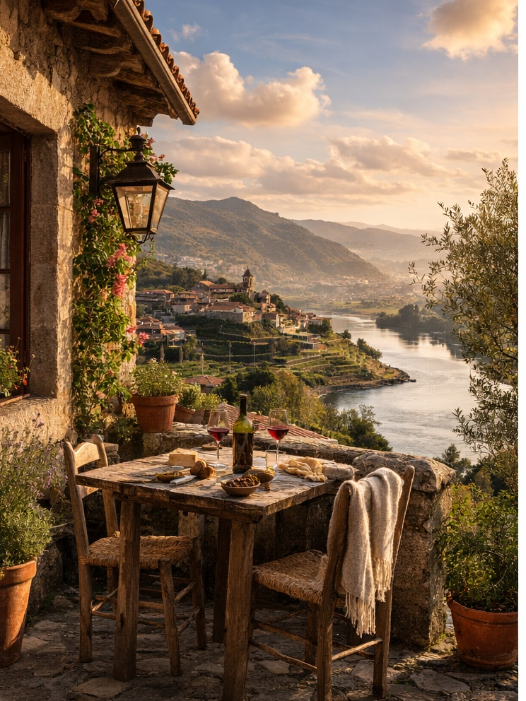
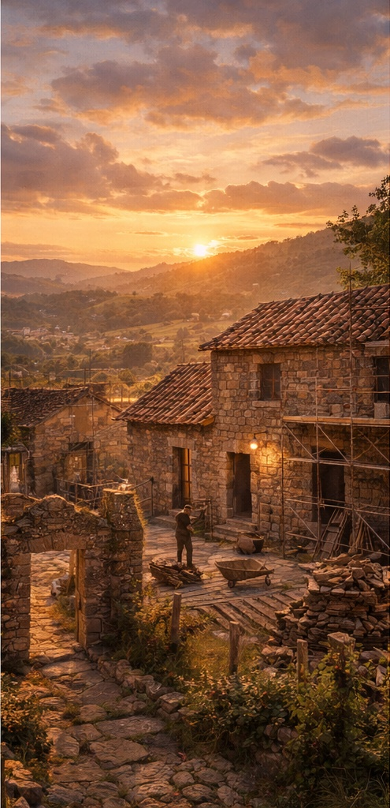
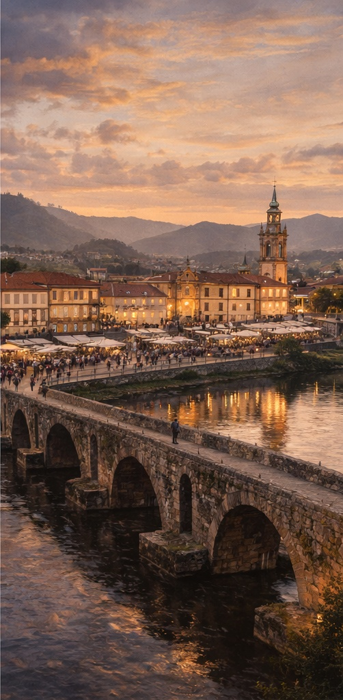
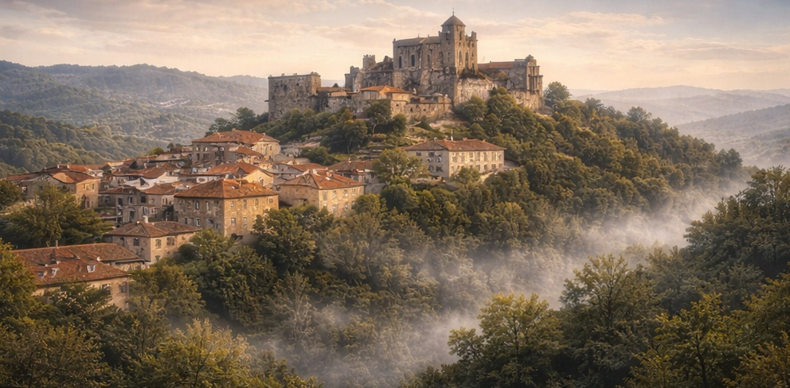
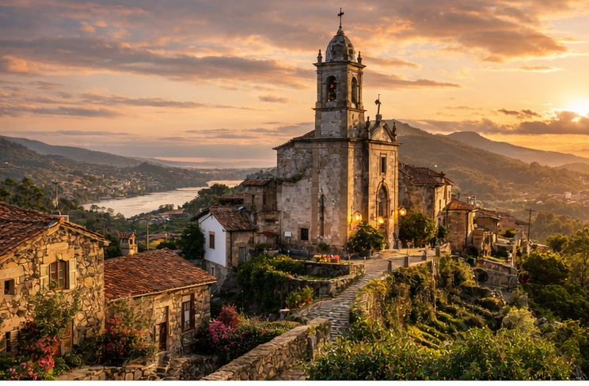

Coastal Lifestyle Properties
Homes near beaches, river mouths, and village centers for buyers seeking both beauty, walkability, and short-term or seasonal rental appeal.
Buy property in Northern Portugal, create income through smart investments, and become part of a growing international community.
Spacious was founded by Americans who relocated to Caminha, Portugal after discovering the unique lifestyle and investment potential of Northern Portugal.
Today we help international buyers purchase property in Northern Portugal, navigate the relocation process, and transform traditional Portuguese homes into beautiful residences or income-producing rentals.
Northern Portugal remains one of Europe’s most overlooked real estate markets — offering Atlantic beaches, historic towns, vineyard landscapes, and a slower pace of life just one hour from Porto.
We help clients find hidden opportunities, character homes, renovation projects, and coastal properties that are often difficult to source from abroad.
From visas and NIFs to neighborhoods and next steps, we simplify the move to Portugal into a clear and manageable process.

Moving to Portugal has become increasingly popular for Americans, Canadians, and Europeans seeking a slower lifestyle, lower cost of living, and access to one of the safest countries in the world.
Northern Portugal offers exceptional value compared to Lisbon and the Algarve while providing Atlantic beaches, historic towns, vibrant food culture, and easy access to Porto International Airport.
Spacious helps guide buyers through visas, NIF registration, banking, property purchases, renovation planning, and long-term relocation strategy.
Understand which Portugal visa or residency path may fit your goals and what documents you need to prepare before applying.
Set up the foundations needed to buy property, open accounts, apply for residency, and complete transactions more smoothly.
Learn the legal steps, due diligence process, costs, and timeline required to move from search to successful property purchase in Portugal.
For clients not relocating immediately, we help shape strategies to make a property productive before full-time relocation.



Spacious combines relocation support, real estate insight, design, renovation strategy, and property management into one client-friendly process for international buyers moving to Portugal.
Discover stone houses, village homes, coastal properties, and hospitality opportunities across Caminha, Viana do Castelo, Ponte de Lima, and the wider north.
Restore character properties with thoughtful updates that preserve Portuguese charm while supporting modern living and strong long-term value.
For owners not living in Portugal yet, we help transform homes into guest-ready or income-producing assets through setup, maintenance, and rental support.
We help clients evaluate towns, property types, and long-term strategies based on lifestyle goals, rental potential, and future resale value.
Spacious helps buyers discover unique real estate opportunities across Northern Portugal — from coastal homes near Moledo Beach to historic village houses and countryside estates ready for renovation.

Homes near beaches, river mouths, and village centers for buyers seeking both beauty, walkability, and short-term or seasonal rental appeal.

Prestige countryside properties suitable for lifestyle buyers, boutique hospitality projects, retreat concepts, and long-term investment holds.
Click on any town on the map to explore the area and see why buyers are choosing it. Compare lifestyle, investment potential, and character across Northern Portugal. When a town stands out to you, click the button to receive current property listings from Spacious.
These pages help you compare the best places to live in Northern Portugal, understand local real estate opportunities, and decide which area feels right for your move or investment plans.
A deep guide to Caminha real estate, lifestyle, stone houses, renovation opportunities, and why buyers are increasingly choosing this corner of the north.
Explore one of Northern Portugal’s most charming coastal cities, from apartments and historic homes to daily life, services, and investment appeal.
Discover vineyards, estates, countryside homes, and a quieter luxury lifestyle in one of Portugal’s most elegant historic towns.
See why Moledo stands out for coastal living, beach homes, seasonal rental appeal, and elegant simplicity by the Atlantic.
A practical guide for Americans comparing towns, lifestyle, buying property in Portugal, and planning a smoother relocation.
Understand housing, daily costs, quality of life, and why the north can be such a compelling alternative to higher-cost regions.
Life in Northern Portugal combines Atlantic beaches, historic villages, local markets, vineyards, traditional architecture, and a relaxed pace that many visitors quickly fall in love with.

These answers help buyers researching relocation to Portugal, Northern Portugal real estate, and the practical side of moving north.
Yes. International buyers can purchase property in Portugal. Most buyers first obtain a Portuguese tax number, called a NIF, and open a local bank account before completing a purchase.
Northern Portugal often offers more space, lower property prices, a slower pace of life, and a more local feel than some of Portugal’s highest-profile markets.
Yes. Spacious helps buyers compare towns, navigate the buying process, plan renovations, and think through the practical side of relocating to Northern Portugal.
Enter your email to access our guide to moving, buying, and investing in Northern Portugal.
Download The Spacious Guide to Moving & Investing in Northern Portugal and learn how to choose a visa, obtain a NIF, buy property, and turn a home into an income-producing asset.
Talk with Spacious about towns, properties, renovation potential, or how to build a relocation plan that fits your timeline and budget.
Book a Consultation